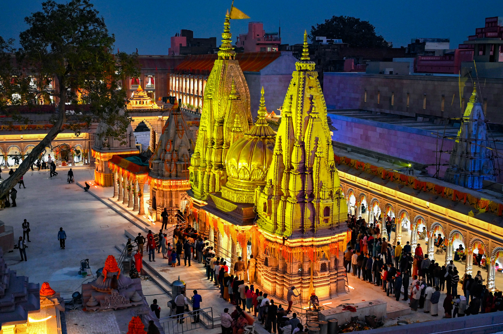

Uttar Pradesh
Kashi: The Eternal City
"Older than history, older than tradition, older even than legend..." This is how the world sees Kashi, but for the devout, it is simply the earthly abode of Lord Shiva. To be here is to stand at the very center of the Hindu cosmos, a city of light (*prakāśa*) where the fires of creation and dissolution burn eternally, a sacred ford (*Tirtha*) designed to carry the soul across the ocean of existence.
The Cosmic Significance of Kashi
According to the *Kāśī Khaṇḍa* of the Skand Purana, Kashi was not built upon the earth but manifested from the divine effulgence of Lord Shiva himself, resting upon his trident (*triśūla*). It is therefore known as *Avimukta Kṣetra*—the sacred space that Lord Shiva never forsakes, even during the cosmic dissolution (*pralaya*). It is here that Shiva grants the sacred *tāraka-mantra* to every soul that departs, ensuring their immediate liberation (*mokṣa*).
Key Spiritual Experiences
Ganga Snan & Aarti: A dip in the holy Ganga at sunrise is not a mere bath but a purification of the soul. In the evening, the Dashashwamedh Ghat comes alive with the Ganga Aarti, a mesmerizing ritual of fire, incense, and chant. The rhythmic clang of bells, the fragrance of sandalwood, and the sight of countless lamps floating on the dark waters create a spectacle of profound devotion that connects one to millennia of faith.
Vishwanath Darshan: A visit to the Kashi Vishwanath Temple, one of the twelve sacred Jyotirlingas, is the culmination of the pilgrimage. To have the *darśana* of the Lord of the Universe in his eternal city is an experience of immense spiritual merit, a moment of profound connection with the formless divine manifested for the devotee.
Exploring the Ghats: The Ghats of Kashi are the soul of the city. From the quiet reverence of Assi Ghat, where the poet Tulsidas composed the Ramcharitmanas, to the profound reality of Manikarnika, the great cremation ground, each of the 84 ghats tells a timeless story of life, death, and faith.

The Sacred Geography of Kashi
The *Kāśī Khaṇḍa* describes the city as being divided into three sacred segments (*khaṇḍas*), each presided over by a form of Lord Shiva. A true pilgrimage involves visiting all three.
- Oṃkāreśvara Khaṇḍa: The northern part of the city, representing the sacred syllable "Oṃ".
- Viśveśvara Khaṇḍa: The central part, home to the main Vishwanath Jyotirlinga, the Lord of All.
- Kedāra Khaṇḍa: The southern part, believed to bestow the merit of visiting the Himalayan Kedarnath.
A Pilgrim's Conduct (Yatra Maryada)
The scriptures are clear that the benefit of a pilgrimage depends on the inner disposition (*bhāva*) of the pilgrim. Kashi is a zone of heightened karmic accountability. The Skanda Purana warns: *"A sin committed elsewhere becomes reduced in a Tirtha. But what is committed in the Tirtha is never destroyed anywhere."*
Therefore, a pilgrim must practice self-restraint (*samyama*), observe a sattvic diet, and engage in charity (*dāna*). Most importantly, one must refrain from accepting gifts (*pratigraha*), as this is said to diminish the accumulated spiritual merit of the yatra.